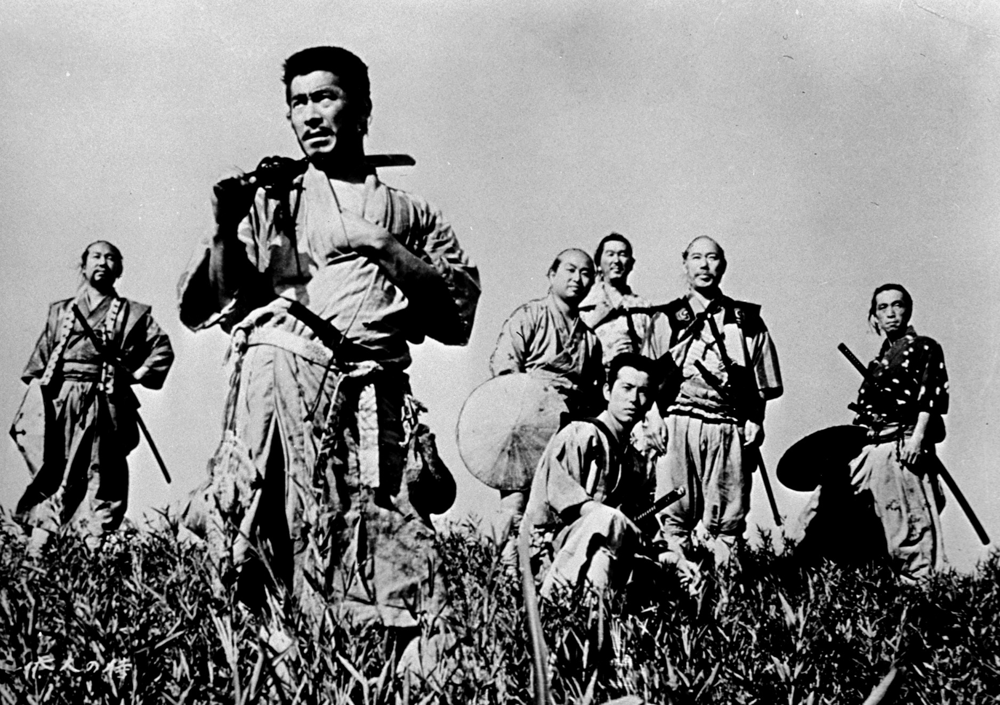

La Caste des Samouraïs, tout le monde connaît. Quoi ? Qui a dit: “Moi, je connais pas !”… Ignare, toi qui a pour passion les mangas, tu te dois de connaître au moins Samouraï Shodown.

Les Samouraïs étaient des guerriers, à la fois héroïques et sanguinaires. Dans l’antique Japon, les Samouraïs formaient l’armée de ce (MAGNIFIQUE !) pays, lors d’invasions étrangères.
A côté de cela, chaque guerrier “appartenait” à un Daimyo, maître des terres dudit Samouraï. Ce Daimyo était lui-même un subordonné: il obéissait à un ou des Shogun(s). Ceux-ci avaient tout pouvoir. A l’époque, même l’Empereur n’avait plus toute autorité. Il était toujours descendant de la déesse du Soleil, Amaterasu, mais le contrôle du pays revenait aux Shoguns, sorte de maires de chaque Province et conseillers de l’Empereur. Les Samouraïs devaient accomplir deux “missions”: Obéissance et Protection envers le Daimyo et le Shogun; Amour, Bienveillance, Honneur et Protection envers sa famille et ses ancêtres.
Ils furent aussi la Police de la nation. Très souvent, et sur les ordres des Daimyos, deux clans s’affrontaient en combat pour gagner de l’influence sur un territoire.
Si un Samouraï déshonorait sa famille et ses maîtres, ou s’il manquait à sa parole, il était arrêté et exécuté (sans autre forme de procès!) par les Samouraïs attitrés de l’Empereur (ben, ils ne se faisaient pas ce cadeaux!). Mais, pour le guerrier, l’arrestation est un déshonneur plus grand encore. Ainsi, avant que la Police ne procède à son exécution, il se donne la mort pour réparer ses fautes. Ce sacrifice, nous le connaissons sous le nom de Hara-Kiri: Hara signifiant ventre et Kiri signifiant couper, fendre. Ce suicide était précédé d’une cérémonie appelée Sepuku qui constituait à bénir l’arme du crime et à purifier son âme.
Le Samouraï utilisait un poignard appelé Tanto. Il se le plongeait dans le ventre jusqu’à la garde, un peu au-dessous de l’estomac, puis le ressortait à quelques centimètres de la pointe (là où ça coupe le plus !) et s’ouvrait de droite à gauche, puis tournait le poignard lame vers le haut et remontait jusqu’au cœur (sanglant, n’est-ce pas ?). Bien entendu, l’issue était fatale !!
Avant de procéder au sacrifice, le guerrier aura “désigné” un complice. Son rôle: abréger les souffrances du sacrifié en lui coupant la tête !! (Highlander, vous connaissez ?).
Ce peut être choquant, pour nous autres occidentaux, mais c’était un code d’honneur (pensez aux Kamikazes pendant la deuxième guerre mondiale, c’était la même chose !) et ils s’y tenaient.
Les Samouraïs pouvaient être très généreux, ce qui peut paraître paradoxal, mais ils avaient leur propre code moral. Et pour ne pas laisser les filles en reste (donc celles qui se sentaient l’âme guerrière), nous étions de la partie nous aussi. Notre arme: la Naginata. Arme longue comme une lance, terminée par une large lame du même acier que celui utilisé pour les Katanas (arme blanche des Samouraï). Notre but: couper les jarrets des chevaux de nos ennemis, pour que nos gentils maris leur tranchent la gorge, alors qu’ils sont au sol.
Le jiu-jitsu et le kendo, disciplines de combat des Samouraïs
Les Samouraïs se battaient au Katana, arme blanche d’une efficacité plus que reconnue. Elle tranchait même les armes en métal!
Une arme redoutable pour qui savait s’en servir. Tout Kenshi ou Kendoka (celui qui pratique le Kendo) se doit d’acquérir un jour ce symbole (j’en ai un d’ailleurs, non tranchant car les véritables Katanas sont patrimoine national tout comme les armures, donc des copies, souvent non tranchantes, sont vendues en France et dans d’autres pays. Un objet à ne pas laisser entre toutes les mains car, s’il ne coupe pas, il est quand même pointu et un seul coup peut provoquer d’importantes blessures !!!).
J’en viens au Kendo: ensemble de techniques d’attaques et de défense. Une frappe et niveau de la tête (MEN) pour ouvrir en deux verticalement (vachement gore !!), une frappe pou couper le poignet (KOTE), une pour le tronc (DO), et une frappe d’estoc au niveau de la gorge (TSUKI).
Lorsque notre Samouraï se retrouvait désarmé (c’était rare, les combats ne durant pas plus de quelques minutes tout au plus, sans oublier le peu de survivants vu l’efficacité des sabres !), il utilisait le Jiu-Jitsu, ensemble de projections, de clés (poignets, bras, genoux, colonne vertébrale et cervicale (fatales, celles-là !), épaules, etc…) et des formes d’immobilisations au sol pour la capture de prisonniers de guerre.
Les Samouraïs ont régné en maîtres sur le peuple jusqu’à l’ère de l’Empereur MEIJI, qui mit un terme à cette caste légendaire. La totalité des Samouraïs disparut vers 1880. Mais des “nostalgiques” ne voulurent pas abandonner cet art. C’est secrètement que des entraînements avaient lieu.
Malheureusement, les morts s’accumulaient, puisqu’ils utilisaient des sabres tranchants. Jusqu’à ce qu’un beau jour, quelqu’un (merci à lui !) émit l’idée d’utiliser des sabres en bois. Mieux, n’est-ce pas ? Mais même si le nombre de morts décroissait visiblement, il n’en restait pas moins qu’il y en avait encore !! Enfin une armure fuit conçue, plus légère et moins ornée que les originales. Depuis ce temps, les armes ont un peu changé: on se sert maintenant d’un Shinai, 4 lattes de bambou: souple et solide en même temps.
C’est une discipline très traditionnelle et qui rebute souvent mais si une fille comme moi en fait, tout le monde peut en faire !! On utilise le Ki, énergie interne que l’on réveille au début d’un entraînement par quelques secondes de méditation. C’est en fait l’équivalent de la cosmo-énergie des Chevaliers du Zodiaque. Nous ne pouvons pas l’augmenter comme eux mais nous pouvons la contrôler. Pour savoir augmenter son Ki à volonté, cela demande des années de travail régulier et constant sur le souffle et l’effort physique. Le Ki sert à faire respirer notre corps, enfermé sous 3 kilos d’armure (pour les gabarits les plus petits, sinon c’est 5 ou plus !!)
Quant au Jiu-Jitsu, cité plus haut, c’était la discipline de combat à main nue par excellence des Samouraïs. A l’époque, l’ensemble des défenses (cf. paragraphe précédent) était effectué “à la volée”, c’est-à-dire sans aucune retenue ni délicatesse.
Par exemple: A (le méchant) menace B (le gentil) avec un couteau. B porte un coup de pied appelé Mikazuki GERI, qui permet de désarmer. A laisse échapper son arme et est complètement surpris, donc reste cloué sur place. B en profite pour s’avancer rapidement vers son agresseur et lui prend le poignet comme indiqué sur le petit dessin. D’un geste sec, il porte une clé, allant dans le sens contraire de l’articulation et CRAC ! le poignet et le coude lâchent, c’est la fracture. Attention, Attention, à ne surtout pas essayer sur le petit frère ou la petite sœur !! Il faut de l’entraînement !! Bien entendu, de nos jours nous ne pratiquons plus “la volée”, le nombre de blessés serait considérable ! Les techniques sont les mêmes qu’à l’ancienne époque: seuls les noms ont changé, mais ils sont toujours en japonais.
Le judo
Le Judo est né du Jiu-Jitsu. Tout commença lorsqu’un jeune japonais du nom de Jigoro KANO (non ! pas le KANO de Mortal Kombat !!!) se promena dans un jardin. La neige recouvrait tout. Admirant la beauté des lieux, il s’arrêta devant un arbre. Pourquoi ? me direz-vous. J’y viens, vous répondrai-je. Il regarda l’arbre, donc, et entendit des craquements. Soudain, une branche céda et cette fois, d’un craquement sec, elle s’écrasa au sol près du pied du jeune homme (il avait à peine 20 ans !).
Emu par tant de force et de beauté, il continua son chemin. De nouveau, quelques pas plus tard, il stoppa. Cette fois-ci, un arbrisseau attira son attention. Chargé de neige lui aussi, il menaçait de céder. Quand, sous les yeux de futur maître, l’arbrisseau se courba et la neige glissa. Ainsi débarrassé de son fardeau, il retrouva sa structure initiale. LE PRINCIPE DU JUDO ETAIT NE.
Nous avons un code moral que nous respectons tous. Même mes plus agités s’y plient:
- La Politesse = c’est le respect d’autrui.
- Le courage = c’est faire ce qui est juste.
- La Sincérité = c’est s’exprimer sans déguiser sa pensée.
- L’Honneur = c’est être fidèle à une parole donnée.
- La Modestie = c’est parler de soi-même sans orgueil.
- Le Respect = sans respect aucune confiance ne peut naître.
- Le Contrôle de Soi = c’est savoir se taire lorsque monte la colère.
- L’Amitié = le plus pur des sentiments humains. (Pour le dernier, je ne suis pas d’accord, m’enfin, ce que j’en pense…)
Le Judo est une école de vie (comme toutes les autres disciplines martiales d’ailleurs). Pour ma part, je pense que tous les arts martiaux ont adopté un code similaire et c’est cela qui est fabuleux ! (Je comprends mieux l’attitude des Chevaliers du Zodiaque depuis que pratique ces disciplines !!).
Pour pratique le Judo, il faut savoir chuter, tout comme au Jiu-Jitsu ou à l’Aikido (n’est-ce pas, Erwan ? …(Mmh? , on parle de moi ?, NDErwan)). Il existe trois types de chutes: Arrière, Latérales, Avant. Je ne pourrais pas vous les décrire, ce serait trop long et en plus il faut pratiquer pour bien saisir toutes les sensations. Cependant, par expérience, je peux vous affirmer que les chutes Judo ou Jiu-Jitsu peuvent être appliquées partout!
Je peux juste vous raconter une histoire véridique. Elle me concerne. Nous avons, au club où je m’entraîne, un Sensei (maître ou prof) super cool, c’est un motard (avec la panoplie, les cheveux longs et vie de gaffes en tous genres !!). L’été dernier, il m’a proposé de faire du side-car cross (un side-car moins beau que les routiers, équipé pour faire du cross dans les chemins de terre et très léger !!), j’ai dit: “Pourquoi pas !?” et me voilà, enfilant un casque.
Avant de commencer réellement, il me propose de faire un essai sur du “plat”: “O.K. !”, j’lui dis. Bien, je m’accroche et on monte une bute, on la redescend (mieux que le grand huit, si, si !!) et d’un seul coup, sans prévenir, il prend un virage sec, et moi, ben, aspirée par la force centrifuge, j’ai lâché et là, mue par un réflexe, j’ai transformé ce qui promettait d’être le plus beau vol plané de ma vie en chute Jiu-Jitsu (je me suis relevée illico !!). Donc, au lieu de me retrouver avec les bras et les jambes en sang (comme à chacune de mes gamelles, surtout à vélo…), je n’étais que… sale et un peu étourdie. La minute suivante, je remerciais les Japonais d’avoir inventé cette discipline.
Bien entendu, au Judo, on ne fait pas que des chutes. Des techniques sont à savoir, que je ne pourrais pas vous donner, faute de place.
Le chambara
C’est une discipline toute nouvellement arrivée en France, il y a un an et demi. Peu de clubs dispensent des cours mais ça ne va plus tarder!
En bref, cette discipline est née du croisement entre le Kendo (vu dans les chapitres précédents) et l’Escrime Occidentale. “Hein ?”, diront certains, “C’est quoi ce truc ?”.
Contrairement à ce qu’on pourrait croire, ils se marient très bien. Les frappes sont celles du Kendo, plus une au niveau de la jambe (Ashi) et la posture est celle de l’Escrime Occidentale (légèrement en fente avant). Il se pratique avec des armes en mousse (entraînement) appelés Kodaishis et avec de véritables armes blanches lors de démonstrations (rares). Un chose est sûre: c’est défoulant ! Heureusement, il y a un casque en plastique couple et léger et OBLIGATOIRE pour éviter d’avoir un Kodaishi dans l’œil (ne riez pas ça fait très mal, j’en sais quelque chose !!). Les règles sont à peu de choses près les mêmes qu’au Kendo.
Les autres disciplines (dont ceux hors Japon)
L’Aïkido (ressemblant sur quelques points au Jiu-Jitsu), le Karaté dont le Kokyushinkai (pour les cinglés qui aiment la douleur), le Jiu-Jitsu* brésilien (si vous connaissez le jeu Tekken 3 sur Playstation, vous connaissez Eddy, un des combattants: look rasta, cool, il pratique cette discipline, ressemblant d’ailleurs à de la danse rap: il te file des coups de pieds tu les vois pas arriver !!), le Tae Kwon Do (un jeu de jambes excellent, très spectaculaire (d’origine coréenne, NDErwan) !!), le Kung-Fu, art martial chinois, sublimé par Bruce LEE (extra, je l’adore !) et perpétué par Jackie CHAN (hilarant et efficace !). Bon, je m’arrête là !
Les arts martiaux, les jeux vidéos , les mangas, tout un monde
Nous pouvons voir que les arts martiaux sont largement mis à contribution: Dragon Ball (Z, GT, …), Street Fighter (II, V, …), Cyber Weapon Z, etc…., j’en passe et des meilleurs !!
Ce thème peut paraître banal à la longue, mais les auteurs se surpassent à chaque fois, pour nous donner envie de lire un manga sur les arts martiaux (encore !) à la sauce cyborg ou héroïc fantasy (ah tiens ! ça change…). Par extension, il y a les jeux vidéos. Ils procurent un sacré plaisir quand on gagne (j’adore cela ! ! ), citons: Tobal (1, 2, 3), Street Fighter, Tekken (1, 2, 3), Mortal Kombat (1, 2, 3), Bushido Blade (jeu de baston à armes blanches en tout genre ! !, GENIAL ! ), Ninja (tuera, tuera pas, discrétion et efficacité !), Bloody Roar, Dead Alive…
Bref, les éditeurs peuvent dire merci aux Arts Martiaux, parce que c’est une sacré part de marché !! Pour ce qui est des mangas et des animes, ça bouge aussi ! En tant que technicienne plutôt que compétitrice, je peux vous dire que beaucoup de techniques ont été inventées. Bien sûr, il y a les coups de base: coup de poing, de pied, de genoux, quelques projections et c’est tout !! Après, place aux boules d’énergie et autres transformations d’énergie… Pas que je sois contre, au contraire, j’adore cela mais par rapport aux Arts Martiaux, ça colle pas trop avec la réalité, c’est tout.
Si je peux me permettre, essayez les Arts Martiaux, vous apprécierez encore plus vos mangas, car vous les comprendrez mieux ! Ceci est juste un avant-goût de ce que sont les Arts Martiaux et je ne peux vous en dire plus faute de place (dommage !!) mais essayez, vous serez charmés !
A savoir: au Japon, il y a différentes écoles. Notre savoir sur les Arts Martiaux provient de ces écoles. Mais ce qu’il faut savoir c’est que toutes ont une version légèrement différente de l’Histoire. Aussi, si des détails concernant les Samouraïs dans mon article semblent “bizarres” pour les lecteurs confirmés, sur les Arts Martiaux, ils savent également, que je peux donc être issue d’une école différente de la leur.